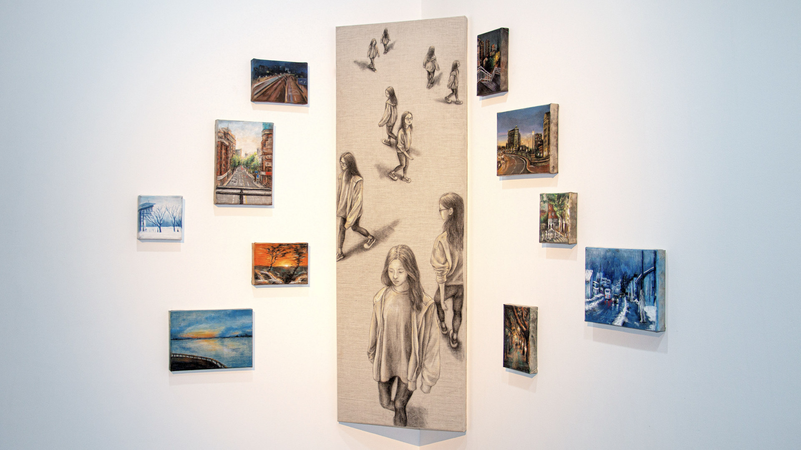
Art & Design艺术与设计
Some works about time, nature, and life.
一些作品关于时间、自然和生活。
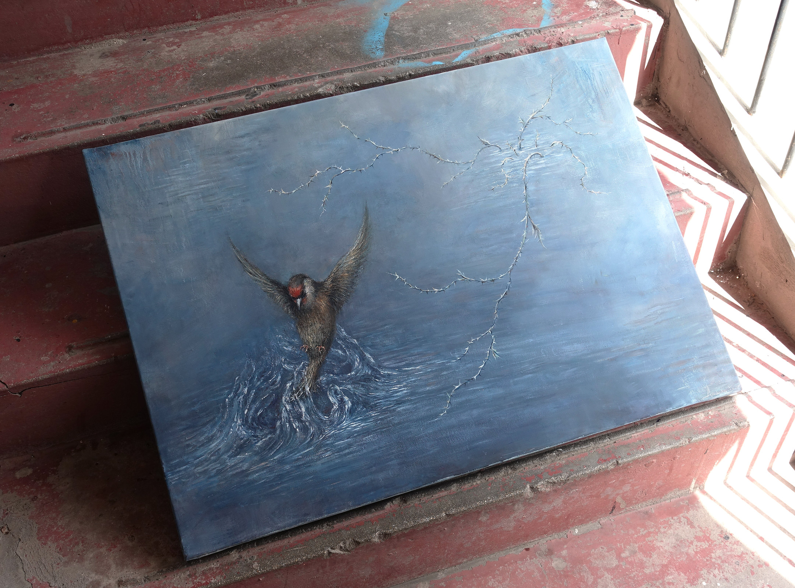
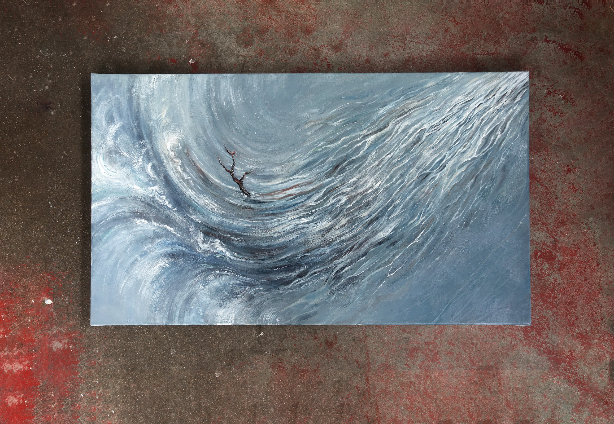
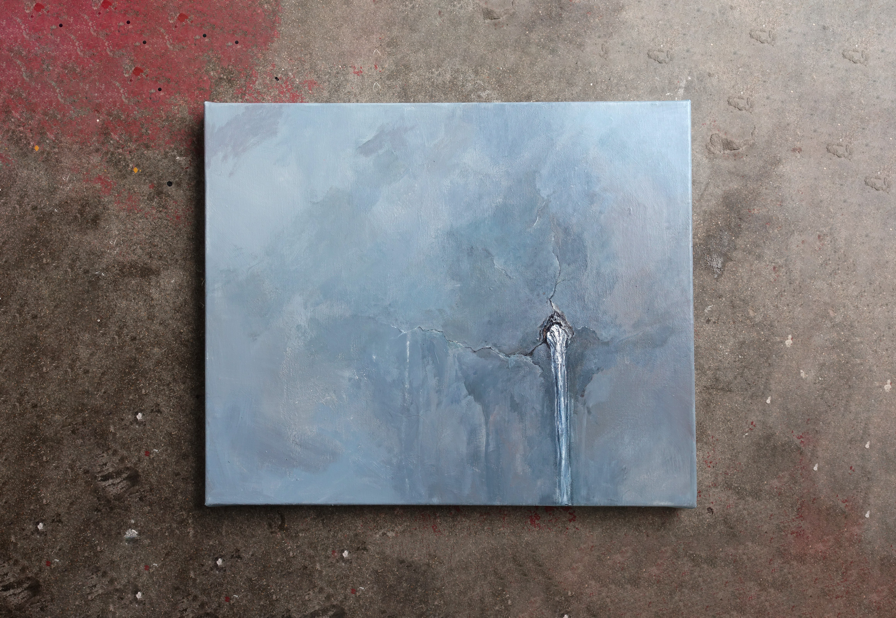
WATERS
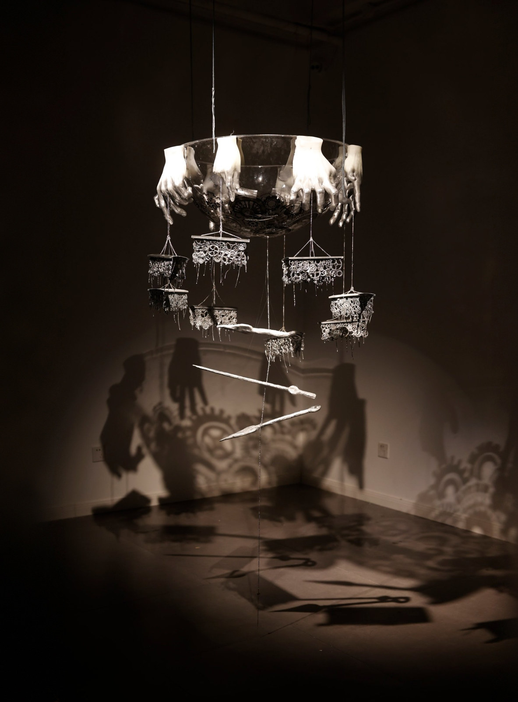
TEMPO
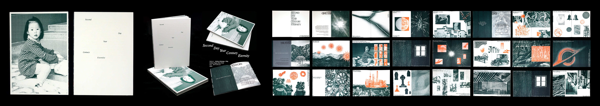
Second, Day, Year, Century, Eternity
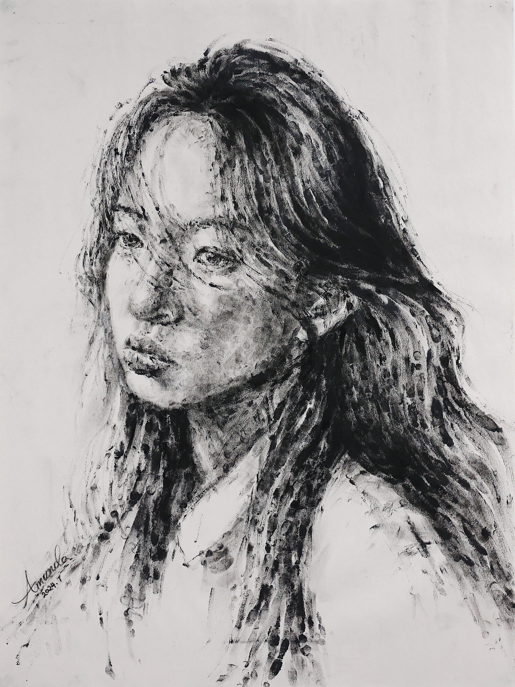
Fingerprint指纹
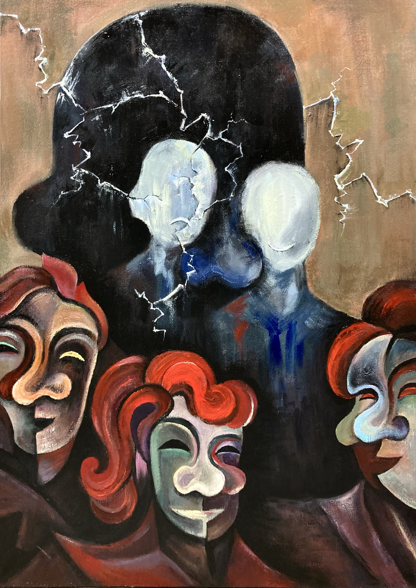
Man in Mask戴面具的人
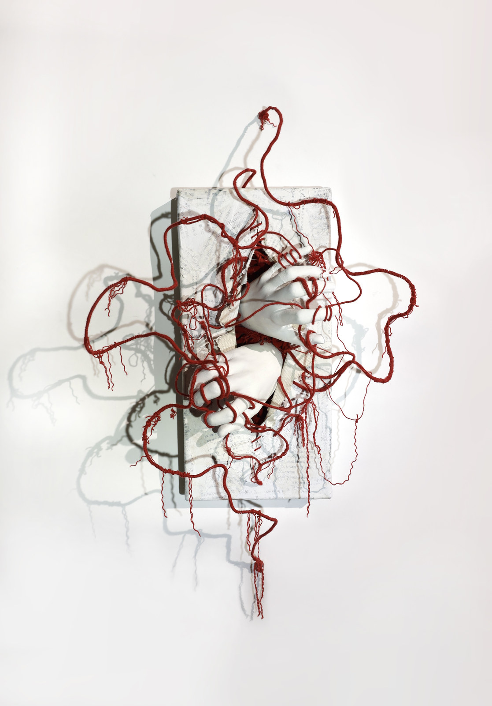
Beyond the Tangle
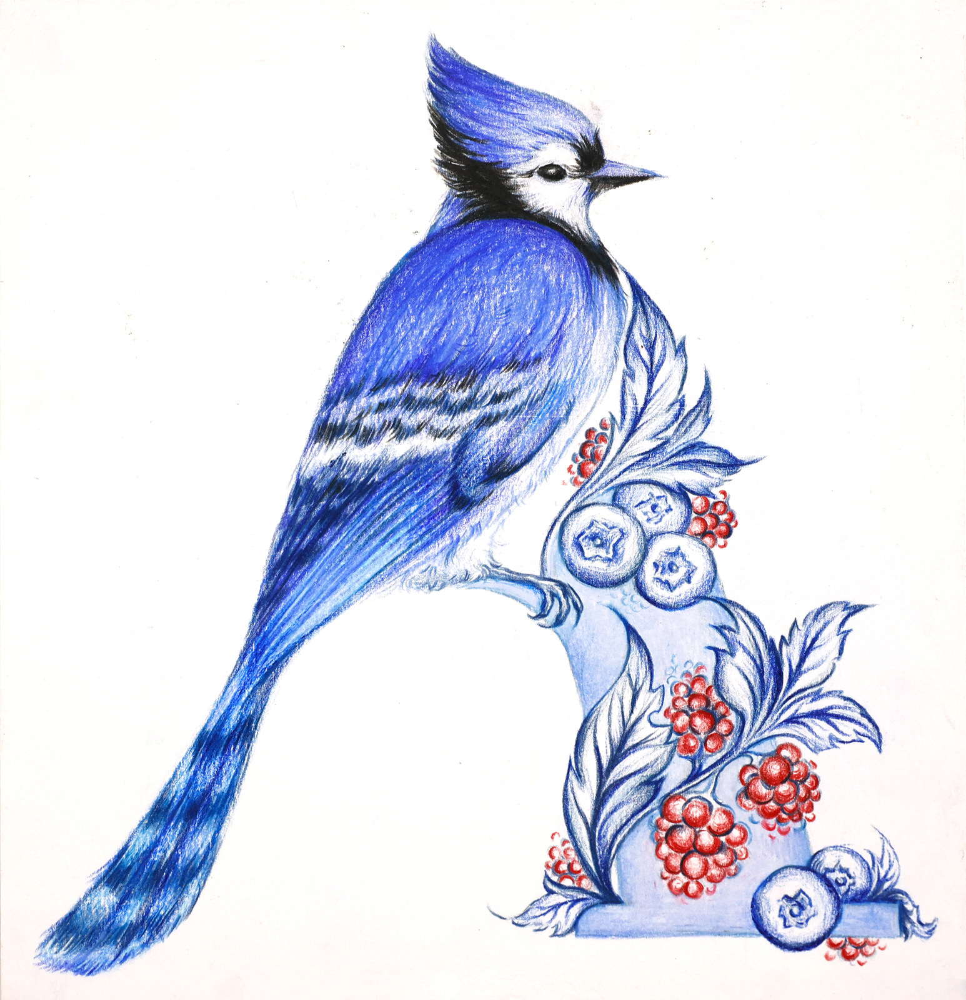
Blue Jay蓝松鸦
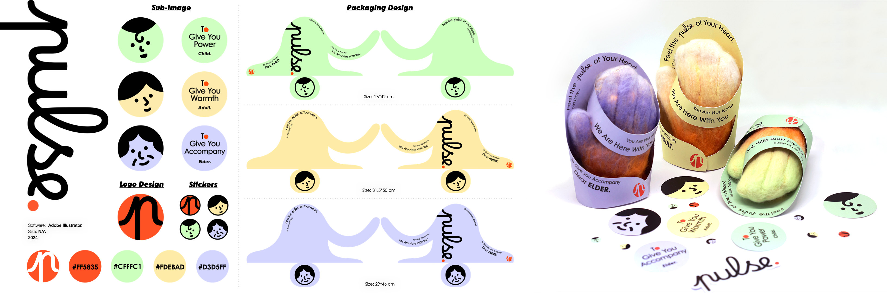
pulse
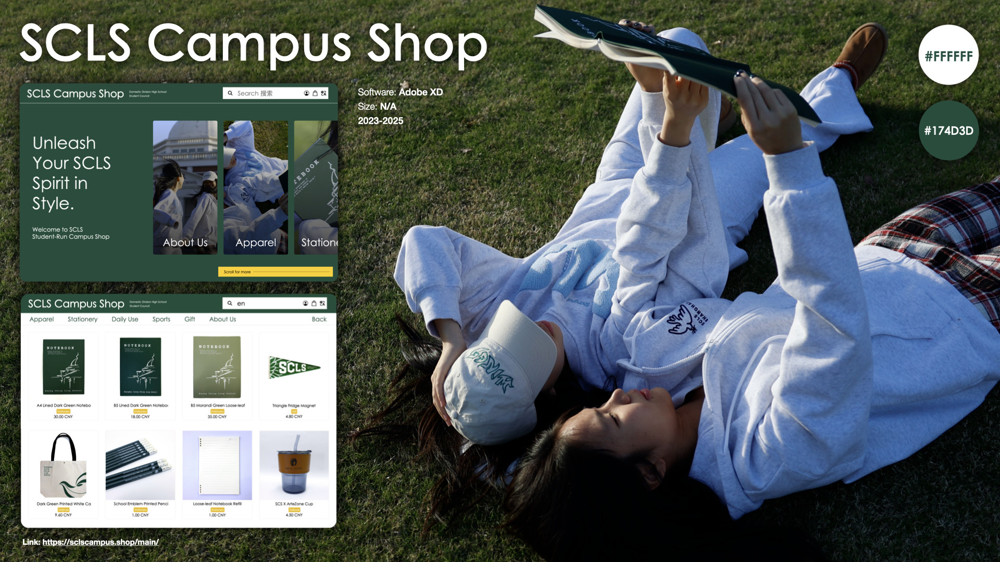